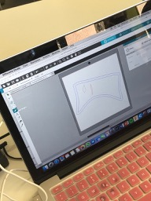
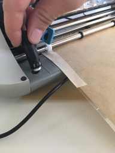

Soft robotics may be used to build wearable devices, but also for surgery.
Air plays a role in soft robotis, too. It makes some object more squishy whereas when you take out the air, they are more stiff.
Using the siluette studio we imported the dxf file of the corsette.
On the right we changed the mm to 10
You want to create more space between the two seams.
The symbols on the left are used to draw patterns on the smaller body. You have to remember that where ever you draw these patterns, the fabric will be sealed so there won't come any air through it.

On the right you can decide if you want to copy the patterns you drew and in which direction

The next step after is to reflect the bigger and outer body
Cut 2 pieces of baking paper in the size of this template and press it onto it
And push it into this mashine. You will send the smaller body with the pattern on it, so the parts that should be sealed will be cut out.
Make the last settings
Select the strength of the knife 

This is the result after the cut
Then cut out the bigger bodies, too and press them together with the bakin paper between them.
Place it here, again, between two other sheets of baking paper and press the top town when it reached 120 degrees.
And here is the result